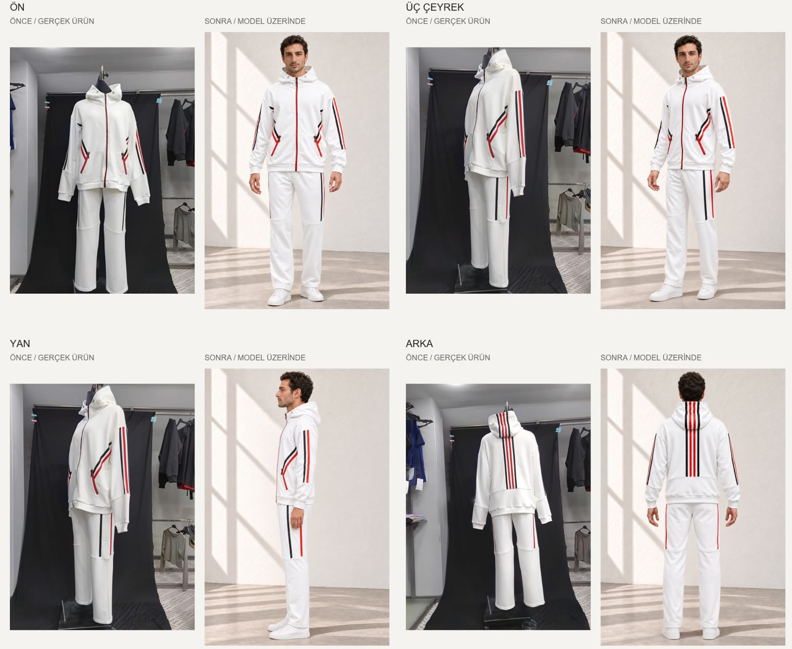

Marka iş birliği
QUINZELL
Üründen modele.

- Amaç ve fikir
- Bir ürün fotoğrafından ne kadar ileri gidilebilir? Quinzell’in hayalet model fotoğraflarından yola çıkarak model üzerinde görseller ve renk alternatifleri hazırladık. Aynı ürünleri farklı renk ve sahnelerde ele alan çalışma, ekibin üretim öncesinde seçenekleri değerlendirmesine de alan açtı.
- MON’un üstlendiği işler
- Model giydirme, renk çalışması ve video üretimi tek süreçte ilerledi. Ekip, renk alternatiflerini model üzerinde görerek üretim kararlarını değerlendirebiliyor.
- Üretilen çıktılar ve formatlar
- İki ürün için görsel dizi. Format: dikey görsel.
- Statü
- Quinzell ile marka iş birliği kapsamında hazırlandı.
Aynı ürün, önce mankende, sonra model üzerinde: ön, üç çeyrek, yan ve arka.

Kaynak fotoğrafModel üzerindeRenk alternatifleri
Şeritli eşofman takımı